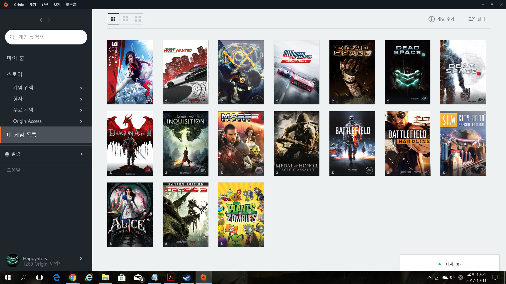
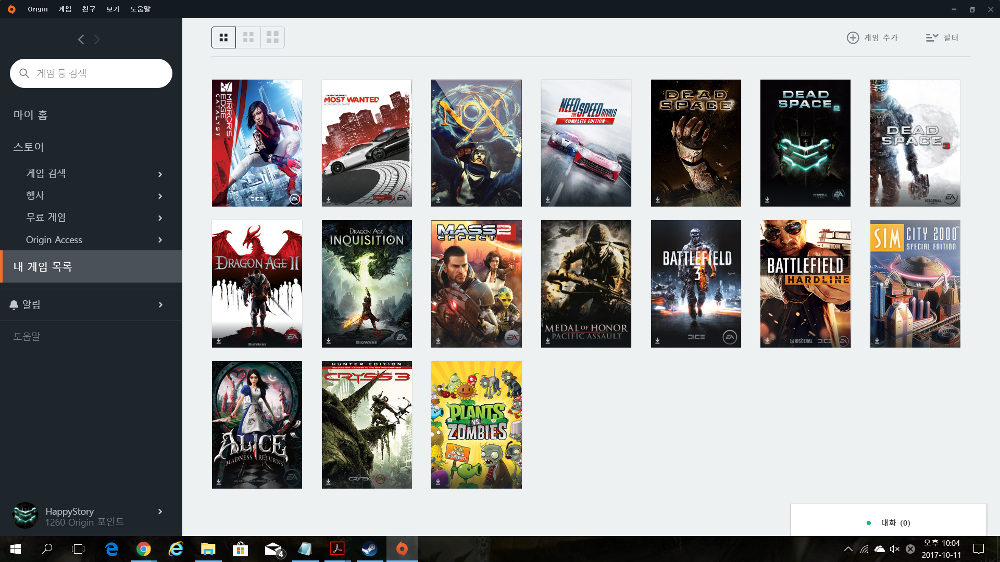

최근 나의 Gaming 생활은?
 



스팀입문을 시작으로 게임을 하나 둘 구매하기 시작하더니 어느덧 보유하는 게임 수가 300개가 넘어버렸다. 아직 안 한 게임이 206개정도라니 죽기전에 다 할 수나 있을런지 모르겠다. 하지만 매번 할 게임을 찾아볼 때는 마치 입을 옷을 고를 때 옷을 쌓아두고 입을 옷이 없다고 말하는 것처럼 되어버린다. 점점 성인이 되어갈수록 진지하게 게임을 취미로 하는 친구를 찾기 힘들어져버렸다. 끝까지 이 취미를 지킬 수 있을까?